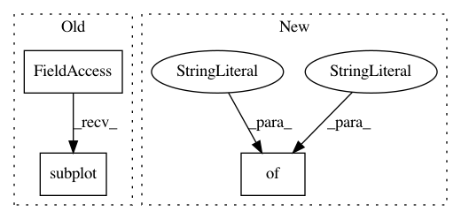

9bd1e940d14ce6622da38a90df44bf6c8e942fe5,examples/pie_and_polar_charts/pie_demo2.py,,,#,20
Before Change
plt.pie(fracs, explode=explode, labels=labels, autopct="%.0f%%", shadow=True)
plt.subplot(the_grid[1, 0], aspect=1)
patches, texts, autotexts = plt.pie(fracs, labels=labels,
autopct="%.0f%%",
shadow=True, radius=0.5)
After Change
// Use a smaller explode and turn of the shadow for better visibility
patches, texts, autotexts = axs[1, 1].pie(fracs, labels=labels,
autopct="%.0f%%",
textprops={"size": "smaller"},
shadow=False, radius=0.5,
explode=(0, 0.05, 0, 0))
plt.setp(autotexts, size="x-small")
In pattern: SUPERPATTERN
Frequency: 4
Non-data size: 3
Instances
Project Name: matplotlib/matplotlib
Commit Name: 9bd1e940d14ce6622da38a90df44bf6c8e942fe5
Time: 2018-04-19
Author: dstansby@gmail.com
File Name: examples/pie_and_polar_charts/pie_demo2.py
Class Name:
Method Name:
Project Name: matplotlib/matplotlib
Commit Name: eb1b77614982745402cace64b0999b339ed3e320
Time: 2018-04-18
Author: 2836374+timhoffm@users.noreply.github.com
File Name: examples/pie_and_polar_charts/pie_demo2.py
Class Name:
Method Name:
Project Name: matplotlib/matplotlib
Commit Name: 07aa92b15195381e9c3ee07f62ba7602caa5a46f
Time: 2021-01-25
Author: ianthomas23@gmail.com
File Name: examples/misc/custom_projection.py
Class Name:
Method Name:
Project Name: matplotlib/matplotlib
Commit Name: 07aa92b15195381e9c3ee07f62ba7602caa5a46f
Time: 2021-01-25
Author: ianthomas23@gmail.com
File Name: examples/event_handling/trifinder_event_demo.py
Class Name:
Method Name: